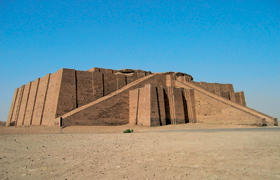

Lezione 2  Le antiche civiltà del Mediterraneo
Le antiche civiltà del Mediterraneo

A noi contemporanei può sembrare ovvio che potere religioso e potere politico siano separati. In realtà in passato il rapporto fra le due forme è stato diverso: in alcune fasi della storia essere re significava nello stesso tempo essere il supremo sacerdote del culto, in altre voleva dire essere il prescelto dagli dèi per comandare. È solo recentemente, a partire dalla rivoluzione francese, che il potere politico non è più collegato a una sfera religiosa: oggi non si accetterebbe più che un uomo governi perché è il rappresentante di Dio sulla terra (questo non significa, però, che le autorità religiose non continuino a influenzare le scelte politiche). Il primo ministro rappresenta invece i cittadini e in una democrazia è legittimato a governare dal loro voto. Tutto questo in Occidente: basta uscire fuori dai nostri confini per scoprire che numerosissimi paesi sono ancora oggi interessati dall'integralismo, il nome con cui si definisce la più o meno perfetta coincidenza fra potere politico e potere religioso. Lo studio delle prime civiltà è essenziale per la comprensione di questo rapporto: si tratta infatti del periodo storico in cui si produsse un primo sdoppiamento del potere. Prendiamo un caso esemplare: i sumeri. Essi hanno elaborato, nel corso della loro storia, tre nomi diversi per indicare il sovrano, nomi che rispecchiano il cambiamento delle forme di potere. Nella fase più arcaica si ha un'unica figura di sovrano-dio in cui potere politico e religioso non sono ancora distinti: l'En. Vi è poi una fase intermedia, quella dell'Ensi: è il sovrano che è inviato dagli dèi ma non si identifica più con essi. Infine, il Lugal, un sovrano che ha certo ancora bisogno di essere legittimato dagli dèi, ma che è considerato in tutto e per tutto un uomo, che deve quindi in una certa misura rendere conto delle sue azioni e che governa in un luogo ormai distinto dal tempio: il palazzo. La stessa cosa è avvenuta in quasi tutte le civiltà antiche, anche se i nomi dei sovrani rimanevano invariati: se il faraone dell'Antico regno in Egitto era a tutti gli effetti un dio, quello del Nuovo regno veniva considerato invece un rappresentante (uomo) degli dèi. Le società mesopotamiche sono state definite sistemi templari-palaziali, per evidenziare che il potere si divideva in queste due forme (tempio e palazzo, politico e religioso) come su due piatti di una bilancia. Dal momento in cui esse iniziarono a distinguersi l'una dall'altra (all'incirca intorno al 2500 a.C.), ognuna lottò per uno sbilanciamento a proprio favore: per questo motivo, leggendo la storia di queste civiltà assistiamo così spesso a conflitti fra il sovrano e la casta sacerdotale. Un esempio eccellente è il tentativo fallito di riforma religiosa del faraone Akhenaton.